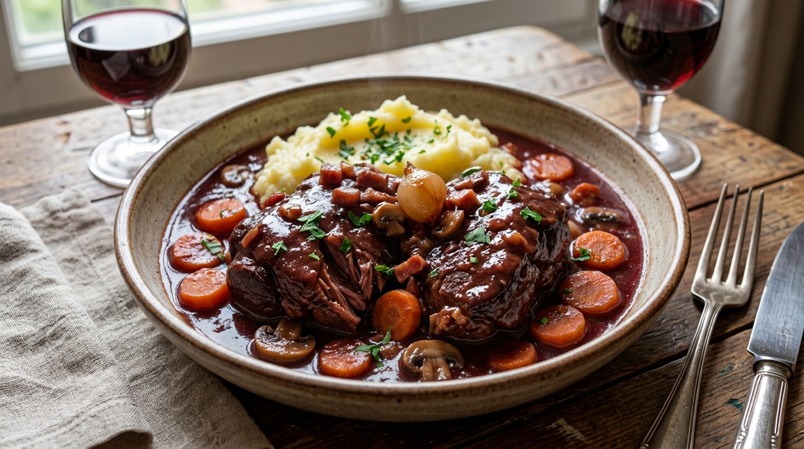

La veille, couper les oignons et carottes en petits morceaux, mélanger avec la viande, les quatres épices, recouvrir de vin.
Egoutter la viande, la faire revenir dans de l'huile d'olive.
Dans une cocotte, faire revenir les lardons, ajouter les légumes de la veille et l'ail.
Après quelques minutes, mettre la viande dans la cocotte, ajouter l'armagnac, flamber.
Saupoudrer avec la farine, mélanger, recouvrir de vin et de marinade de la veille.
Laisser mijoter trois heures à petit feu. Ajouter le poivre un peu avant la fin de la cuisson.
Si vous voulez une sauve plus épaisse, découverez la cocotte trente minutes avant la finde la cuisson.